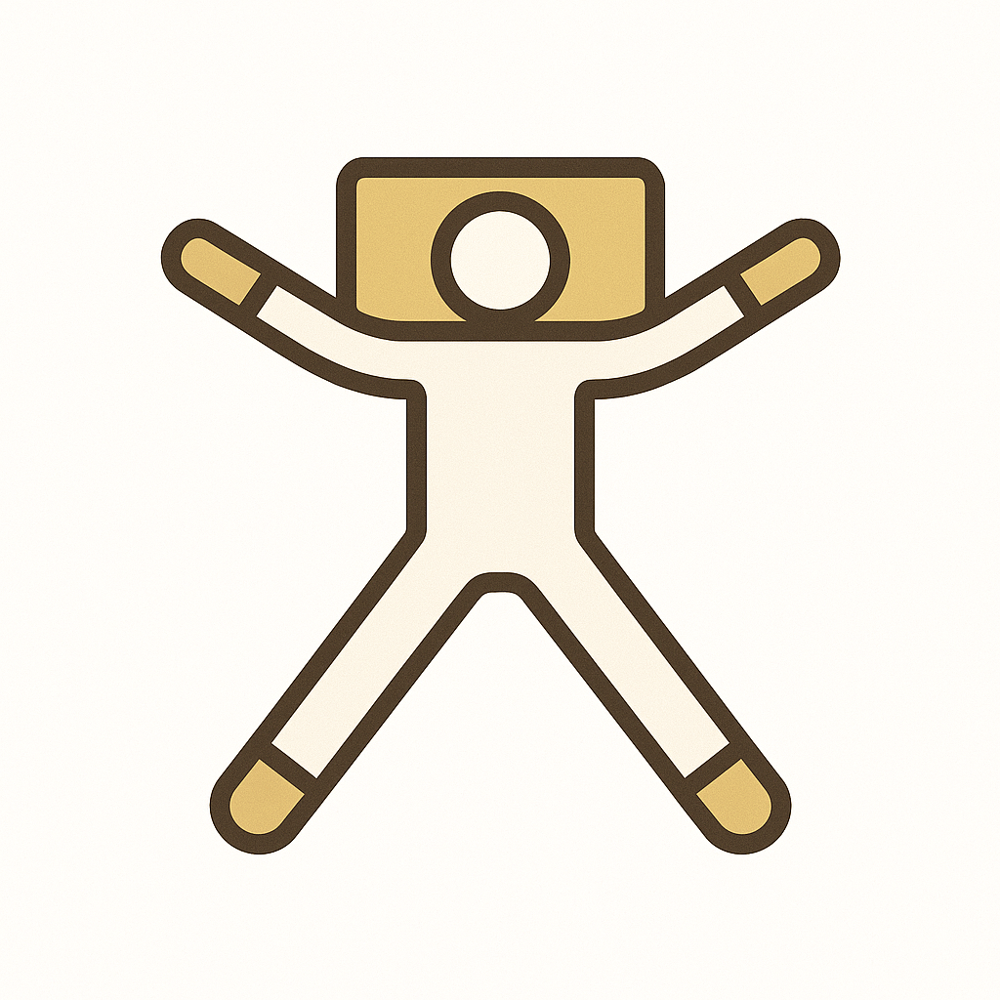
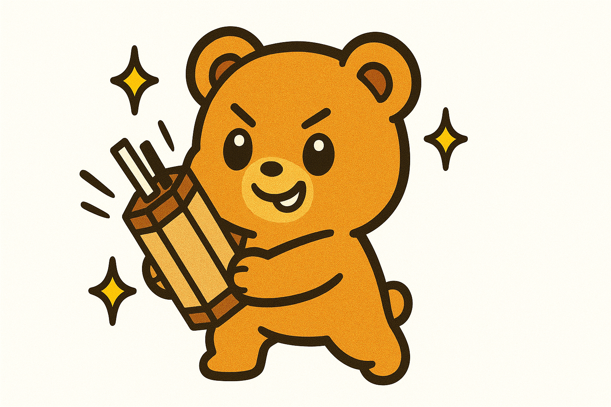

重力調整 Sowell®︎
「特殊な枕」に、身をまかせる。
グイグイ揉んだりしません。専用の「Sowellピロー」を身体の下にスッと入れるだけ。脳と身体が勝手に緩んでいく体験です。
秘密を見るOTのほぐしサロン
「異常なし」の不調を、ここでほどく。
白衣を脱いだ専門家の避難所
医療の現場で見つけたのは、「病院に行くほどではないけれど、確かに辛い」という声でした。
だから私は、病院の外に気兼ねない場所を作りました。先生と患者ではなく、人と人として。
天才・ピヨ教授による、最短ルートの毒舌養生学。

とりあえず、おみくじでも引きませんか？
完全予約・指名制。あなたの身体とじっくり向き合います。
指名して予約へ進む →© 2025 ほぐしや きだ